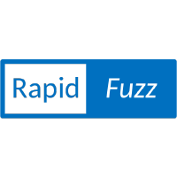

Code
from rapidfuzz import fuzz
string1 = "Hello, World!"
string2 = "Hello, World!"
similarity = fuzz.ratio(string1, string2)
print(f"Similarity Ratio: {similarity}%")Similarity Ratio: 100.0%
In this tutorial, we will explore the Python library RapidFuzz, which is a powerful tool for string matching and fuzzy searching. RapidFuzz is designed to be fast and efficient, making it an excellent choice for tasks that involve comparing strings or finding similar matches.
I first came across RapidFuzz while working on a project to categorize financial data from bank statements. I needed a way to quickly and accurately match transaction descriptions to predefined categories, and RapidFuzz provided the perfect solution.
We will focus on the following key features of RapidFuzz:
As we go through this tutorial, I will share some examples of how to use RapidFuzz effectively. I encourage you to try out these concepts in our own projects. By the end of this tutorial, you should have a solid understanding of how to use RapidFuzz effectively in Python applications. Let’s get started!
To install RapidFuzz, you can use pip, the Python package manager. Open your terminal and run the following command:
This will download and install the RapidFuzz library, allowing you to use it in your Python projects.
An alternative method is to install it via uv if you are using a virtual environment:
Once you have RapidFuzz installed, you can import it in your Python code as shown below and start using its features for string matching and fuzzy searching.
In the next sections, we will dive deeper into the functionalities of RapidFuzz and see how it can be applied to various string matching tasks.
RapidFuzz provides several functions for string matching and similarity scoring. The most commonly used function is fuzz.ratio(), which calculates the similarity ratio between two strings. The ratio is a value between 0 and 100, where 100 means the strings are identical. Here’s an example of how to use fuzz.ratio():
Similarity Ratio: 100.0%In this example, since both strings are identical, the similarity ratio will be 100%. You can also compare different strings to see how closely they match:
Similarity Ratio: 96.0%In this case, the similarity ratio will be slightly less than 100% due to the missing exclamation mark in the second string. RapidFuzz also offers other functions like fuzz.partial_ratio() and fuzz.token_sort_ratio() for more specific types of string comparisons, which we will explore in the next sections.
In addition to exact string matching, RapidFuzz excels at fuzzy searching and partial matching. The fuzz.partial_ratio() function is particularly useful for comparing substrings or when the strings being compared have different lengths. It calculates the similarity ratio based on the best matching substring. Here’s an example of how to use fuzz.partial_ratio():
Partial Similarity Ratio: 100.0%In this example, the fuzz.partial_ratio() function will return a high similarity ratio because “Hello” is a substring of “Hello, World!”. This is particularly useful when you want to find matches in larger texts or when the strings being compared may have additional characters.
Partial Similarity Ratio: 100.0%In this case, the fuzz.partial_ratio() function will return a high similarity ratio because “quick brown fox” is a substring of the larger string. RapidFuzz also provides other functions like fuzz.token_sort_ratio() and fuzz.token_set_ratio() for more complex string comparisons, which we will cover in the next section.
One of the key advantages of RapidFuzz is its performance. However, when working with large datasets or performing multiple string comparisons, it’s important to optimize your code for efficiency. Here are some techniques to improve performance when using RapidFuzz:
process module for batch processing: Instead of comparing strings one by one, you can use the process.extract() function to compare a query string against a list of choices. This is much faster than looping through each choice individually.[('Hello', 100.0, 1), ('Hello, World!', 55.55555555555556, 0), ('Hi there!', 28.57142857142857, 2), ('Greetings', 14.28571428571429, 3)]In this example, process.extract() will return a list of choices along with their similarity scores, allowing you to quickly identify the best matches.
[('Hello, World!', 55.55555555555556, 0), ('Hi there!', 28.57142857142857, 1), ('Greetings', 14.28571428571429, 2)]In this example, we filter the choices to only include those that are longer than 5 characters before applying the process.extract() function. This can help improve performance by reducing the number of comparisons.
processor parameter: RapidFuzz allows you to specify a custom processor function to preprocess the strings before comparison. This can help improve performance by normalizing the strings (e.g., converting to lowercase, removing punctuation) and reducing the number of unique comparisons.[('Hello', 100.0, 1), ('Hello, World!', 62.5, 0), ('Hi there!', 30.76923076923077, 2), ('Greetings', 14.28571428571429, 3)]In this example, we define a custom processor function that converts the strings to lowercase and removes punctuation before comparison. This can help improve performance by reducing the number of unique comparisons and increasing the likelihood of matches.
By implementing these performance optimization techniques, you can ensure that your use of RapidFuzz remains efficient even when working with large datasets or performing multiple string comparisons. Remember to always test and profile your code to identify any bottlenecks and optimize accordingly.
In this tutorial, we have explored the Python library RapidFuzz and its capabilities for string matching and fuzzy searching. We covered the basics of string similarity scoring, fuzzy searching, and performance optimization techniques. RapidFuzz is a powerful tool that can be used in various applications, such as data cleaning, text analysis, and natural language processing. I encourage you to experiment with RapidFuzz in your own projects and see how it can help you achieve better results in string matching tasks. Happy coding!
To learn more about RapidFuzz and its features, you can visit their github webpage at RapidFuzz Github.
# Learning About the Python Library: RapidFuzz
{ width=300px}
## Overview
In this tutorial, we will explore the Python library RapidFuzz, which is a powerful tool for string matching and fuzzy searching. RapidFuzz is designed to be fast and efficient, making it an excellent choice for tasks that involve comparing strings or finding similar matches.
I first came across RapidFuzz while working on a project to categorize financial data from bank statements. I needed a way to quickly and accurately match transaction descriptions to predefined categories, and RapidFuzz provided the perfect solution.
We will focus on the following key features of RapidFuzz:
1. String matching and similarity scoring
2. Fuzzy searching and partial matching
3. Performance optimization techniques
As we go through this tutorial, I will share some examples of how to use RapidFuzz effectively. I encourage you to try out these concepts in our own projects. By the end of this tutorial, you should have a solid understanding of how to use RapidFuzz effectively in Python applications. Let's get started!
## Installation
To install RapidFuzz, you can use pip, the Python package manager. Open your terminal and run the following command:
```bash
pip install rapidfuzz
```
This will download and install the RapidFuzz library, allowing you to use it in your Python projects.
An alternative method is to install it via uv if you are using a virtual environment:
```bash
uv add rapidfuzz
```
Once you have RapidFuzz installed, you can import it in your Python code as shown below and start using its features for string matching and fuzzy searching.
```python
from rapidfuzz import fuzz, process
```
*In the next sections, we will dive deeper into the functionalities of RapidFuzz and see how it can be applied to various string matching tasks.*
## String Matching and Similarity Scoring
RapidFuzz provides several functions for string matching and similarity scoring. The most commonly used function is `fuzz.ratio()`, which calculates the similarity ratio between two strings. The ratio is a value between 0 and 100, where 100 means the strings are identical. Here’s an example of how to use `fuzz.ratio()`:
```{python}
from rapidfuzz import fuzz
string1 = "Hello, World!"
string2 = "Hello, World!"
similarity = fuzz.ratio(string1, string2)
print(f"Similarity Ratio: {similarity}%")
```
In this example, since both strings are identical, the similarity ratio will be 100%. You can also compare different strings to see how closely they match:
```{python}
string1 = "Hello, World!"
string2 = "Hello, World"
similarity = fuzz.ratio(string1, string2)
print(f"Similarity Ratio: {similarity}%")
```
In this case, the similarity ratio will be slightly less than 100% due to the missing exclamation mark in the second string. RapidFuzz also offers other functions like `fuzz.partial_ratio()` and `fuzz.token_sort_ratio()` for more specific types of string comparisons, which we will explore in the next sections.
## Fuzzy Searching and Partial Matching
In addition to exact string matching, RapidFuzz excels at fuzzy searching and partial matching. The `fuzz.partial_ratio()` function is particularly useful for comparing substrings or when the strings being compared have different lengths. It calculates the similarity ratio based on the best matching substring. Here’s an example of how to use `fuzz.partial_ratio()`:
```{python}
from rapidfuzz import fuzz
string1 = "Hello, World!"
string2 = "Hello"
similarity = fuzz.partial_ratio(string1, string2)
print(f"Partial Similarity Ratio: {similarity}%")
```
In this example, the `fuzz.partial_ratio()` function will return a high similarity ratio because "Hello" is a substring of "Hello, World!". This is particularly useful when you want to find matches in larger texts or when the strings being compared may have additional characters.
```{python}
string1 = "The quick brown fox jumps over the lazy dog."
string2 = "quick brown fox"
similarity = fuzz.partial_ratio(string1, string2)
print(f"Partial Similarity Ratio: {similarity}%")
```
In this case, the `fuzz.partial_ratio()` function will return a high similarity ratio because "quick brown fox" is a substring of the larger string. RapidFuzz also provides other functions like `fuzz.token_sort_ratio()` and `fuzz.token_set_ratio()` for more complex string comparisons, which we will cover in the next section.
## Performance Optimization Techniques
One of the key advantages of RapidFuzz is its performance. However, when working with large datasets or performing multiple string comparisons, it's important to optimize your code for efficiency. Here are some techniques to improve performance when using RapidFuzz:
1. **Use the `process` module for batch processing**: Instead of comparing strings one by one, you can use the `process.extract()` function to compare a query string against a list of choices. This is much faster than looping through each choice individually.
```{python}
from rapidfuzz import process
choices = ["Hello, World!", "Hello", "Hi there!", "Greetings"]
query = "Hello"
results = process.extract(query, choices, scorer=fuzz.ratio)
print(results)
```
In this example, `process.extract()` will return a list of choices along with their similarity scores, allowing you to quickly identify the best matches.
2. **Limit the number of comparisons**: If you have a large dataset, consider limiting the number of comparisons by filtering your choices based on certain criteria before applying RapidFuzz. This can significantly reduce the number of comparisons and improve performance.
```{python}
filtered_choices = [choice for choice in choices if len(choice) > 5]
results = process.extract(query, filtered_choices, scorer=fuzz.ratio)
print(results)
```
In this example, we filter the choices to only include those that are longer than 5 characters before applying the `process.extract()` function. This can help improve performance by reducing the number of comparisons.
3. **Use the `processor` parameter**: RapidFuzz allows you to specify a custom processor function to preprocess the strings before comparison. This can help improve performance by normalizing the strings (e.g., converting to lowercase, removing punctuation) and reducing the number of unique comparisons.
```{python}
def custom_processor(s):
return s.lower().replace(",", "").replace("!", "")
results = process.extract(query, choices, scorer=fuzz.ratio, processor=custom_processor)
print(results)
```
In this example, we define a custom processor function that converts the strings to lowercase and removes punctuation before comparison. This can help improve performance by reducing the number of unique comparisons and increasing the likelihood of matches.
By implementing these performance optimization techniques, you can ensure that your use of RapidFuzz remains efficient even when working with large datasets or performing multiple string comparisons. Remember to always test and profile your code to identify any bottlenecks and optimize accordingly.
# Conclusion
In this tutorial, we have explored the Python library RapidFuzz and its capabilities for string matching and fuzzy searching. We covered the basics of string similarity scoring, fuzzy searching, and performance optimization techniques. RapidFuzz is a powerful tool that can be used in various applications, such as data cleaning, text analysis, and natural language processing. I encourage you to experiment with RapidFuzz in your own projects and see how it can help you achieve better results in string matching tasks. Happy coding!
*To learn more about RapidFuzz and its features, you can visit their github webpage at [RapidFuzz Github](https://github.com/rapidfuzz/RapidFuzz).*